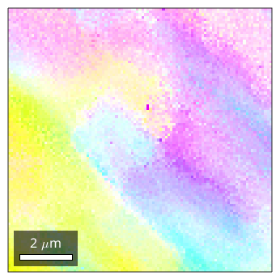
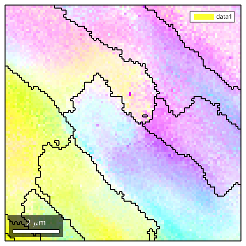

MTEX - Analysis of EBSD Data with gradual and subtle boundaries
Overview of the fast multiscale clustering method for subgrain microstructure detection. The method constructs clusters in a hierarchical manner from single pixels using fuzzy logic to account for local, as well as global information.
Import EBSD data
% load some data mtexdata single plotx2east % prepare sharp colorcoding oM = ipdfHSVOrientationMapping(ebsd); oM.inversePoleFigureDirection = mean(ebsd.orientations) * oM.whiteCenter; oM.colorStretching = 3 plot(ebsd,oM.orientation2color(ebsd.orientations))
Hint: You might want to use the point group
"432" for colorcoding!
oM =
ipdfHSVOrientationMapping with properties:
inversePoleFigureDirection: [1x1 vector3d]
CS1: [24x2 crystalSymmetry]
CS2: [1x1 specimenSymmetry]
colorPostRotation: [1x1 rotation]
colorStretching: 3
whiteCenter: [1x1 vector3d]
sR: [1x1 sphericalRegion]
 Segment with thresholding
No pixel-to-pixel threshold value captures important boundaries without including many irrelevant or false regions.
grains_high = calcGrains(ebsd,'angle',1*degree); grains_low = calcGrains(ebsd,'angle',0.5*degree); hold on plot(grains_low.boundary,'linecolor',0.7*[1 1 1]) plot(grains_high.boundary,'linecolor','k') hold off

Segment with FMC
Analogous with the threshold angle, a single parameter, C_Maha controls the sensitivity of the segmentation. A C_Maha value of 3.5 properly identifies the subgrain features. A C_Maha value of 3 captures more general features, while a value of 4 identifies finer features but is slightly oversegmented.
grains_FMC = calcGrains(ebsd,'FMC',3.5)
grains_FMC = grain2d
Phase Grains Mineral Symmetry Crystal reference frame Phase
1 13 Al m-3m
GOS meanRotation
0.0084358 153.098
0.0060217 153.427
0.01229 153.367
0.016496 67.4424
0.00481028 165.006
0.0141737 165.398
0.00276888 165.437
0.012498 124.393
0.0215271 167.311
0.0196901 164.93
0.0190118 130.205
0.019412 131.038
0.0124594 166.019
plot the grains
plot(ebsd,oM.orientation2color(ebsd.orientations)) hold on plot(grains_FMC.boundary,'linewidth',1.5) hold off
| DocHelp 0.1 beta |